The seven-circuit labyrinth
Mother Earth
“Mother Earth”

seven-circuit
labyrinth
The labyrinth is one of humanity's oldest symbols. We find them carved in stone and clay, painted on pottery, on jewellery, Etruscan coins, Japanese vases and Sicilian tombs, all over the world and from the remotest past. The oldest found are thought to be 4,000 years old.
The oldest, the most common and the one found everywhere is the seven-circuit labyrinth, which links mother earth with the strength inside us. Its geometry is perfect and natural: shapes we find in our own bodies (the brain, the intestines, the crown of the head, fingertips, the cochlea of the ear…) and throughout nature, in plants and in every element (water, air…).
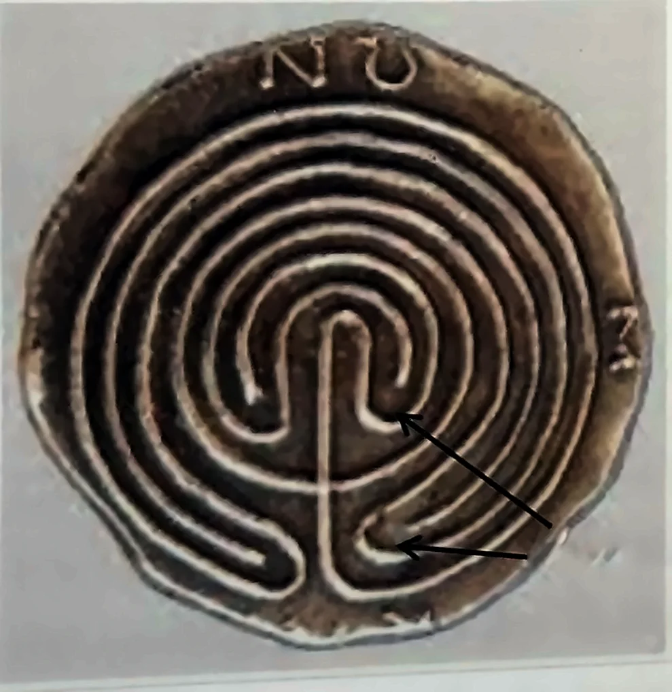
meanders

chakra 1 = Root
chakra 2 = Sacral
chakra 3 = Solar plexus
chakra 4 = Heart
chakra 5 = Throat
chakra 6 = Brow
chakra 7 = Crown
These labyrinths swing from one side to the other, like the meanders of a river, which slow the water down and fill it with oxygen.
The seven-circuit labyrinth has been linked to the body's seven chakras and, curiously, walking in takes you round the circuits in exactly the order the chakras open in a full, balanced meditation: 3-2-1-4-7-6-5. This is the order Eastern meditation follows towards enlightenment.

How to draw a seven-circuit labyrinth
You start from a cross, four angles and four dots. In this way the square, which stands for the earth, joins the circle, which stands for the sky, and they merge into one sign for the whole universe.

Variations of one labyrinth
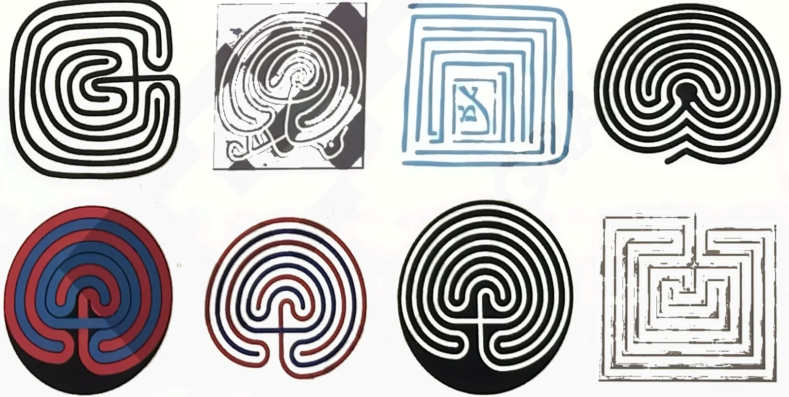
You enter a labyrinth, circle the centre several times, and leave by the same entrance. After a few turns, time seems to stop. It is hard to be distracted: the path is narrow and you have to keep looking at the ground. The route turns both clockwise and anticlockwise.
A few words on labyrinths
- This kind of labyrinth is a single path that reaches the centre and returns to the start. It is the design of all the earliest labyrinths, and its purpose is to resolve conflict. The other kind, with “false” paths, is a maze, made to confuse.
- These labyrinths look a little like the human brain. Perhaps, following that model, people believed that completing the circuit changed or improved the mind, or led to enlightenment.
- The shape has lasted in many human cultures on most continents.

- They are cut into stone, pottery, clay tablets, mosaics, manuscripts, stone patterns, turf, or cathedral floors. The earliest known designs are 3,000 years old.
We can suppose that the main purpose of labyrinth rituals was the mental and physical state of the people taking part. These rituals built up physical energy and concentration, which were needed for hunting sea animals, fishing and long journeys across the cold, dangerous White Sea. Music, ritual dance and often mind-altering substances were required parts of many rituals, and strengthened the effect each time.
What labyrinths were for
- Scandinavians used them to protect fishermen.
- Vikings made them before putting out to sea, for protection.
- For the Hopi, the labyrinth is the marriage of Father Sun and Mother Earth: the sun's circular paths laid over the four sides of the earth.
- There are labyrinth dances, in which young people spiralled in to the centre and back out again. They were popular until the 19th century and are still danced in Europe. They descend from an ancient dance on the Greek island of Naxos, where Theseus and his friends celebrated their victory.

Pictured in the book: a labyrinth painted in the temple at Kurukshetra, where the Pandavas prayed before battle.
- Many labyrinths drawn on the ground were traps for evil spirits.
- In some houses a labyrinth was drawn on the front door for protection.
Where labyrinths are found
We can see that the labyrinths of the Americas are much more recent. Why?

Some examples

In Galicia, forest, mostly eucalyptus, now covers the labyrinths and hides many of the petroglyphs. Recent fires have uncovered many of them. They are among the oldest anywhere, about 4,000 years old. A few stand out:
Laxe Escrita, Carnota A rock-art site which, unusually, also has carved boats. From Laxe Escrita the sun sets into the sea all year except for the quarter of the year around the summer solstice.
Nazca labyrinth (Ica, Peru) 1,500 to 2,000 years old. It is over 4 km long, and nobody knows whether it was meant to be seen from the air or walked (it would take an hour). Its shape is irregular and its purpose unknown, though it is thought to have been mystical or religious.

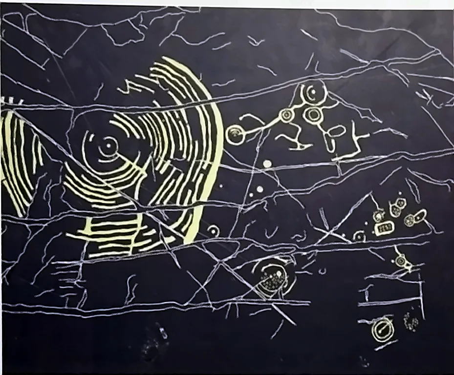
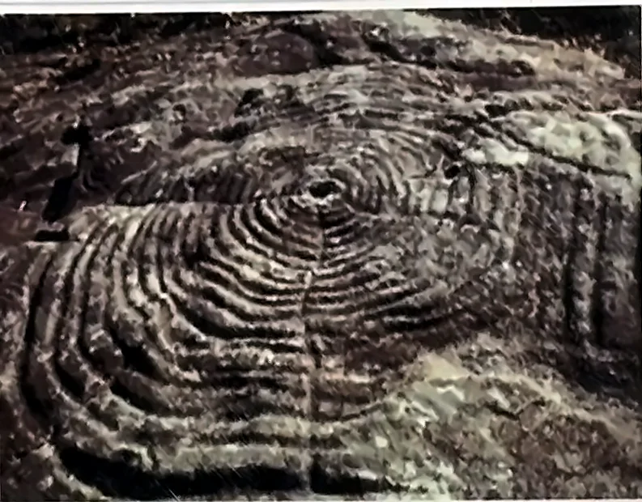
Monte Tetón petroglyphs (Galicia) Circular designs of 18 concentric rings; according to the book, the largest in Europe (350 m across). It served as an astronomical calendar and for reckoning. About 4,000 years old.
The Sun Dagger (New Mexico) Petroglyphs on Fajada Butte, Chaco Canyon (USA). A sun clock that marked the seasons. Around AD 1000.
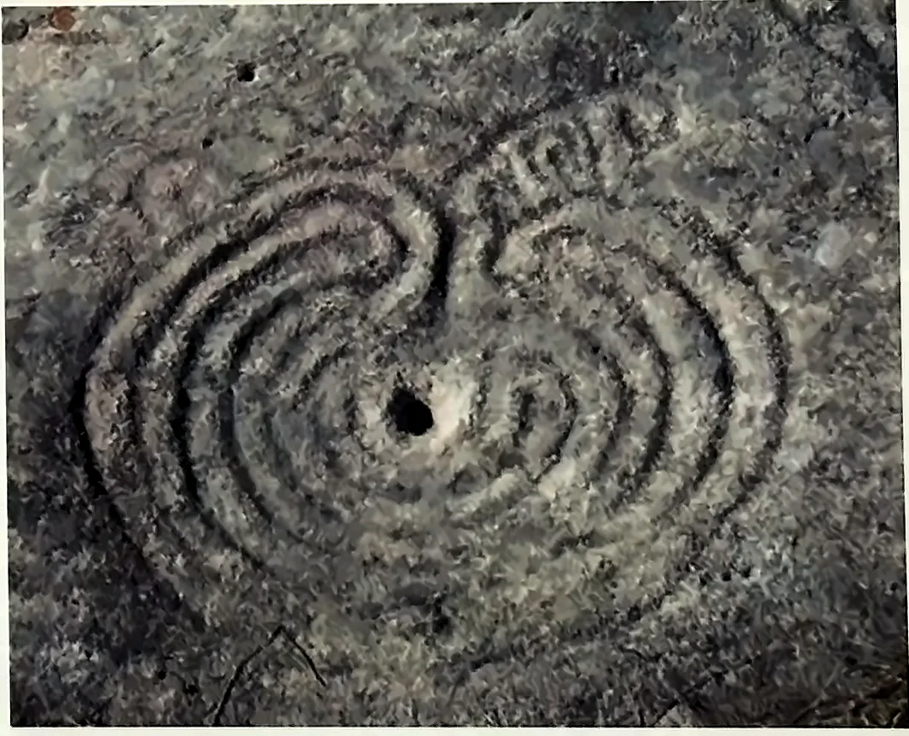

Mogor labyrinth (Galicia) Around 3000 BC, in the Neolithic. Its entrance is closed and turned towards the west. It is thought to be a calendar marking the equinoxes and solstices.
Mogor labyrinth (Galicia) Around 3000 BC, in the Neolithic. Its entrance is closed and turned towards the west. It is thought to be a calendar marking the equinoxes and solstices.


The Mogor labyrinth's entrance faces west: at the equinox the sun enters at the far end of the picture. Four circular carvings have their centres in a straight line, and that line is traced by the shadow of a stick set in the centre of the westernmost one.

The Man in the Maze. Made by the Papago (Tohono O'odham) people of central Arizona. Wise choices lead a person into harmony with the cosmos, whatever the hardships or distances on the way.
A person stands at the entrance at the start of life, then walks in, turning, getting lost, winding along life's long path. At last they reach the centre, death, where I'itoi greets them, the creator, the Sun god, the Elder Brother, and they join him in harmony with the universe.

The “Babylons” of Kandalaksha (Russia). 3,000 to 5,000 years old. “Babylon” was the old name for the many stone labyrinths of northern Russia. Sacrifices are believed to have been held there, and they were thought to be energy points leading to another dimension. Their original purpose is unknown, but the Sámi are known to have held shamanic rituals in them at the start of this millennium.

Goa, India (2500 BC)
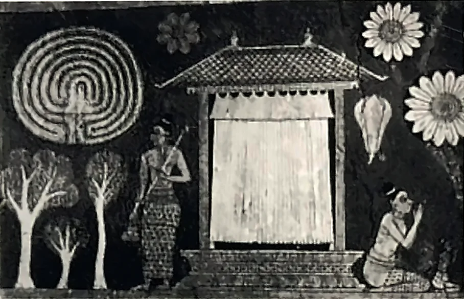
Wall painting in the Mädavala temple, Sri Lanka. Buddhist mythology.

Etruscan jug from Tragliatella, Italy (650 BC)

Clay tablet from the ruins of the palace at Pylos, Peloponnese (3200 BC, according to the book)
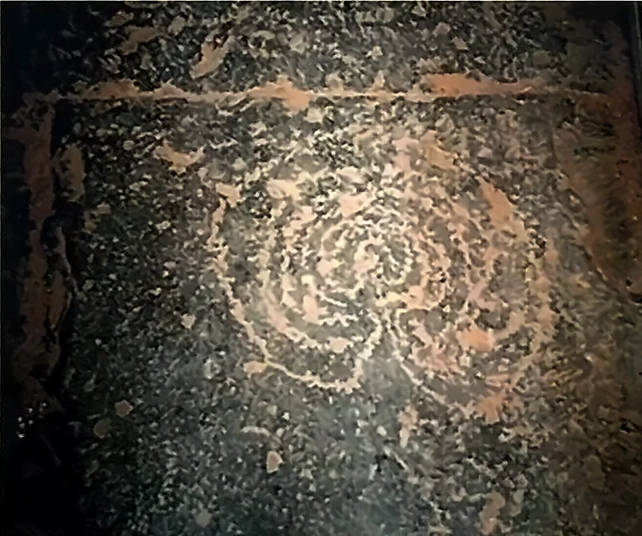
Egyptian temple of Kom Ombo

Carving on the walls of the “Tomba del Labirinto”, Sardinia (3400–2500 BC)

Coins of Knossos, Crete (430–67 BC)

Carving on a dolmen, Padugula (India)
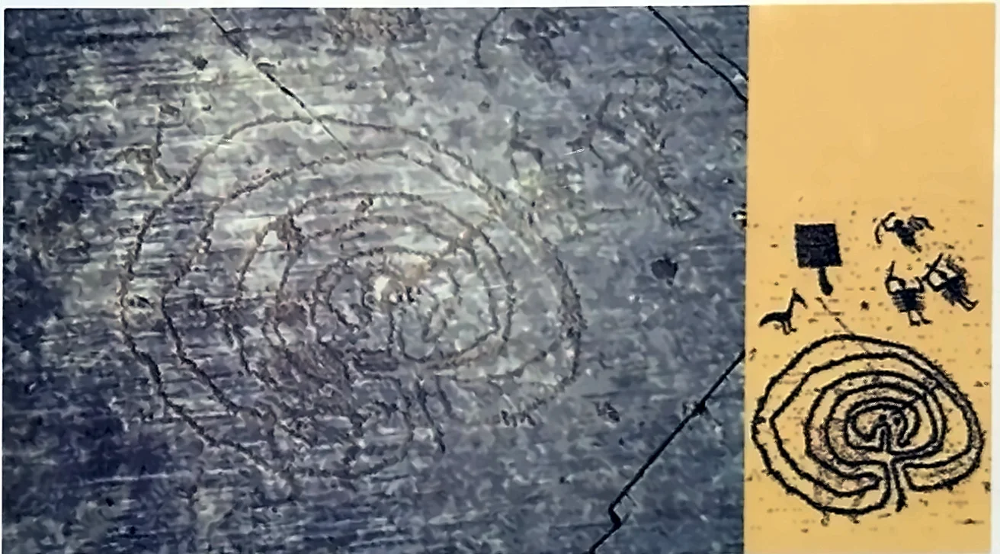
Rock carving in Val Camonica (Italy)
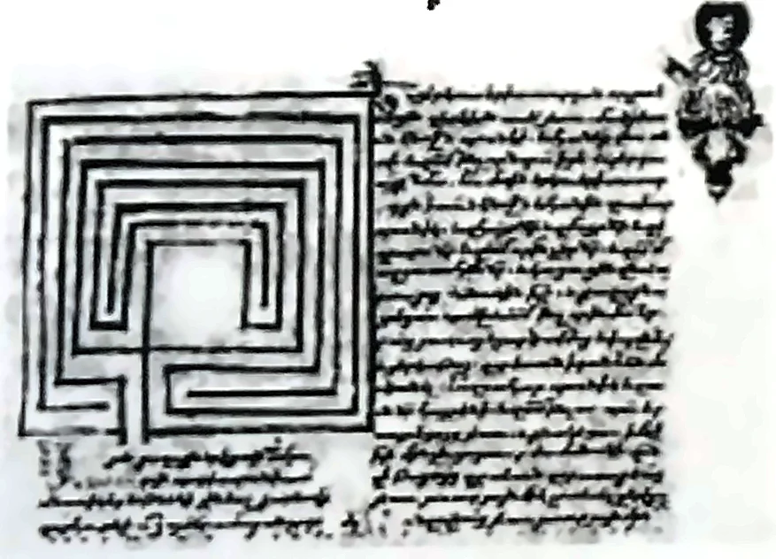
Miniature from an Armenian Bible of 1634, showing the city of Jericho
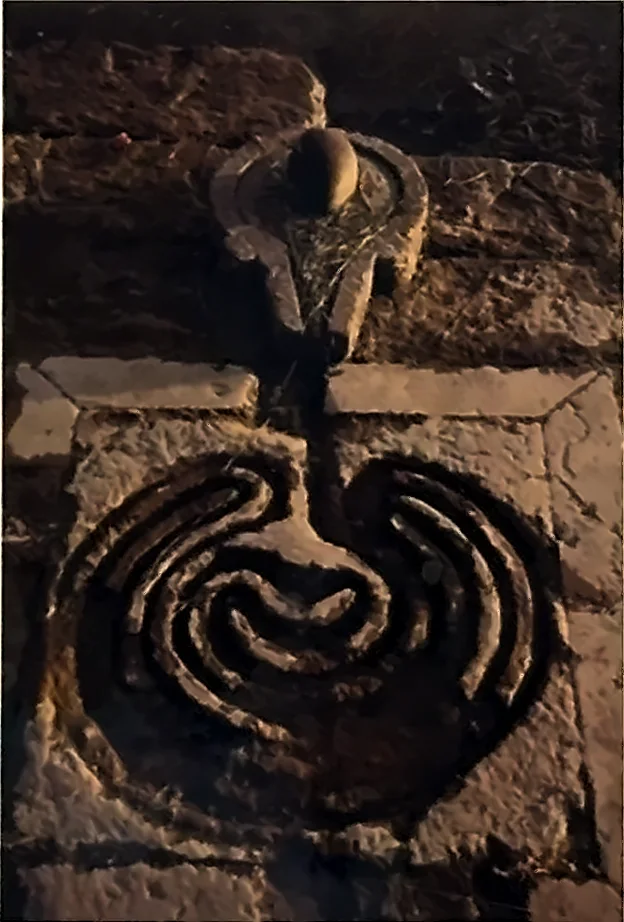
Narmada, India
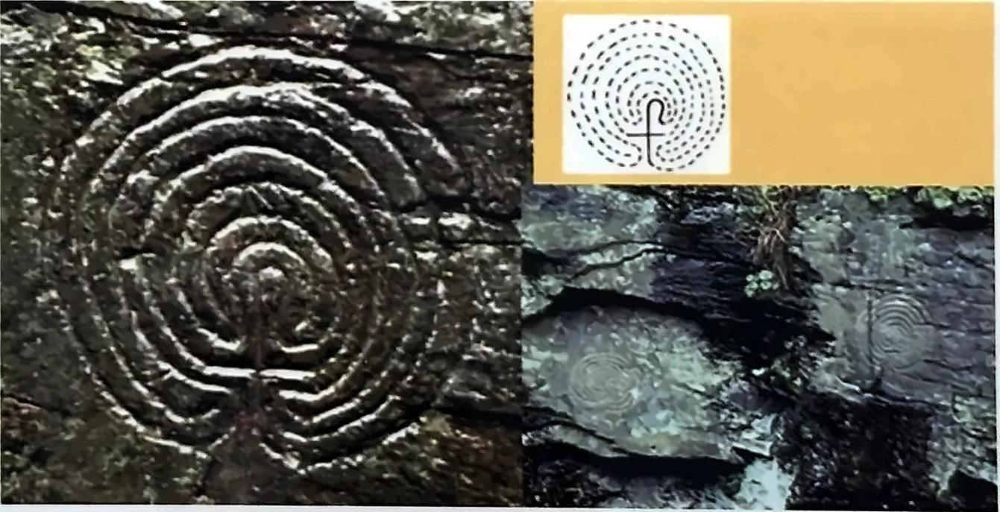
Rock carving at Rocky Valley, north of Tintagel (UK)

Hopi petroglyph near Oraibi, Arizona: the “Mother Earth” symbol (AD 1200)

Makholmen labyrinth (Sweden)

Painted on a red pillar in Pompeii, before AD 79. It reads: LABYRINTHUS HIC HABITAT MINOTAURUS, “the labyrinth, here lives the Minotaur”.
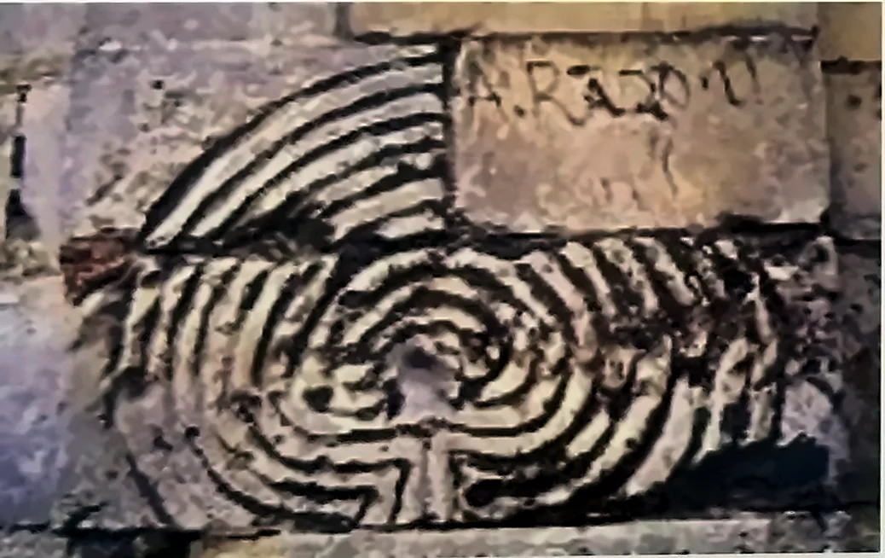
Hern St. Hubert, Belgium

Stone carving with runes at Lye (Sweden)
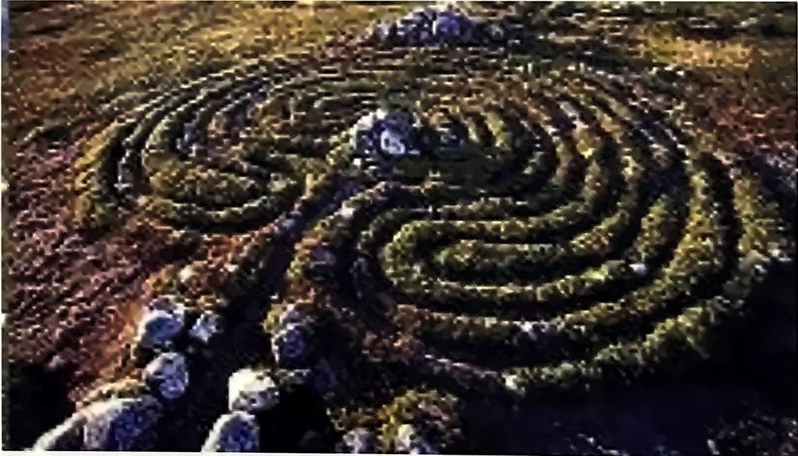
Stone labyrinths of Zayatsky Island, Russia
Turn the pages with the arrows, by swiping, or by tapping the edge of the page.
Pages
- 1Cover
- 2Cretan coin with a seven-circuit labyrinth; arrows point to its meanders
- 3How To Draw A Seven-circuit Labyrinth
- 4A Few Words On Labyrinths
- 5What Labyrinths Were For
- 6Where Labyrinths Are Found
- 7Some Examples
- 8Drawing of the Monte Tetón petroglyphs
- 9The Mogor labyrinth with lines towards the sunset (254° to 283°) and a location map
- 10Pottery sherd with the Papago “man in the maze”
- 11Goa, India (2500 BC)
- 12Coins of Knossos, Crete (430–67 BC)
- 13Hopi petroglyph near Oraibi, Arizona: the “Mother Earth” symbol (AD 1200)